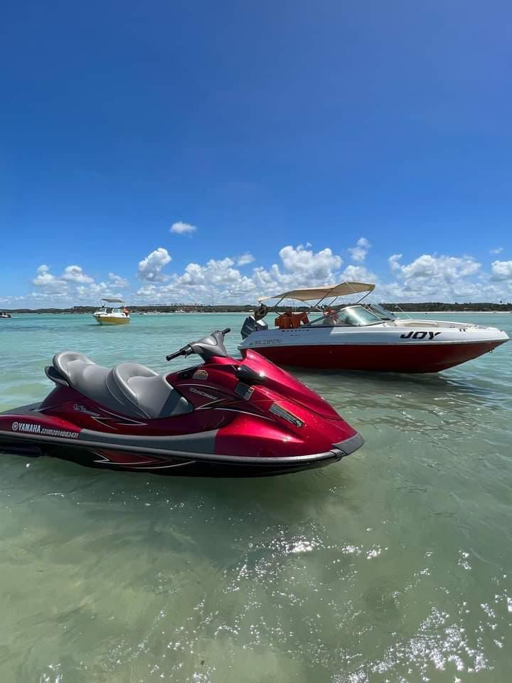
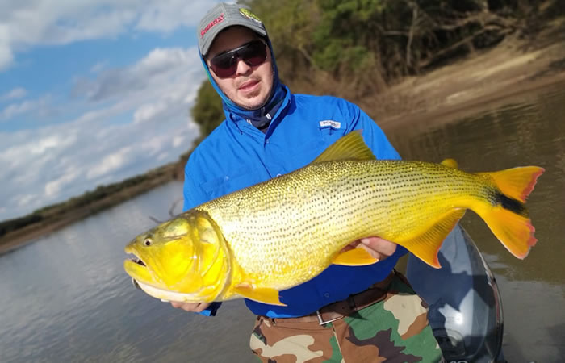

Esportes

Para os apaixonados por velocidade e adrenalina, o passeio de jet ski é uma das experiências mais
empolgantes do
Náutico Clube Fronteira. Pilotar sobre as águas calmas do Rio Grande, sentindo o vento e o sol, é uma
sensação
única. A atividade é acompanhada por profissionais que garantem a segurança dos participantes,
tornando o
momento inesquecível tanto para iniciantes quanto para os mais experientes.

A pesca esportiva é uma das atividades mais tradicionais e relaxantes do Náutico. O Rio Grande oferece
uma
grande variedade de espécies, proporcionando momentos de tranquilidade e conexão com a natureza. Muitos
visitantes aproveitam para pescar ao amanhecer ou ao entardecer, quando o cenário natural é ainda mais bonito,
criando uma experiência de paz e contemplação.

O espírito esportivo também está presente fora d’água, com quadras de vôlei, futebol e beach tênis disponíveis
para os visitantes. As partidas são momentos de descontração, competição saudável e muita risada. É comum ver
famílias e grupos de amigos se reunindo para jogar, celebrar vitórias e aproveitar o dia em um ambiente leve e
divertido.